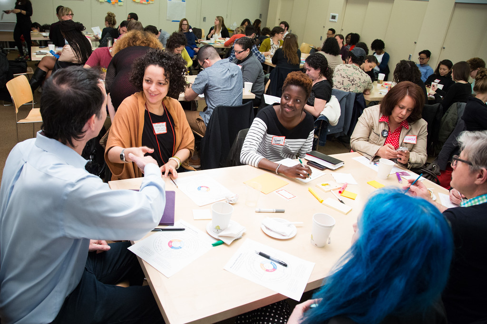

As a Hive NYC community member, you are encouraged to explore any and all avenues you feel will allow you to participate as fully as possible.
The following three general tiers of engagement with Hive NYC have been identified:
These are not prescriptive, fixed roles—they describe patterns of behavior observed in existing participants. Hive NYC is a self-organizing community and each member connects differently. Entry points and trajectories are varied—however, your contribution will be valued, whatever form it takes.